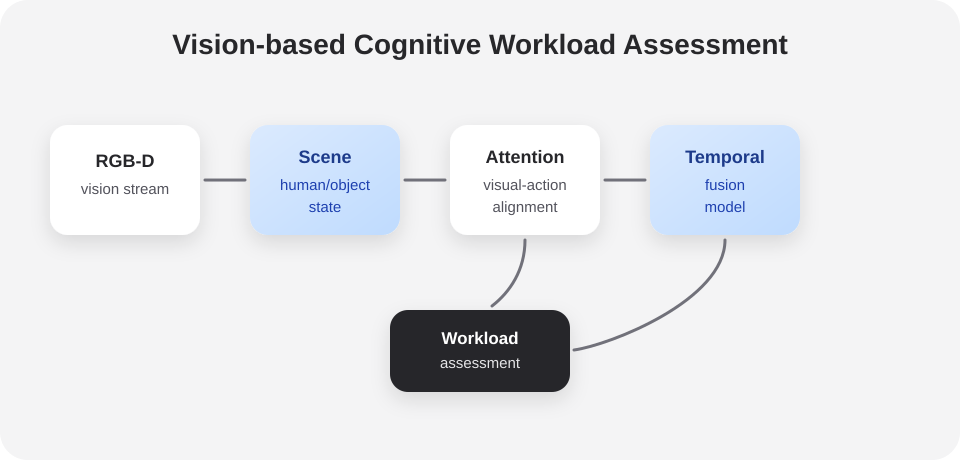
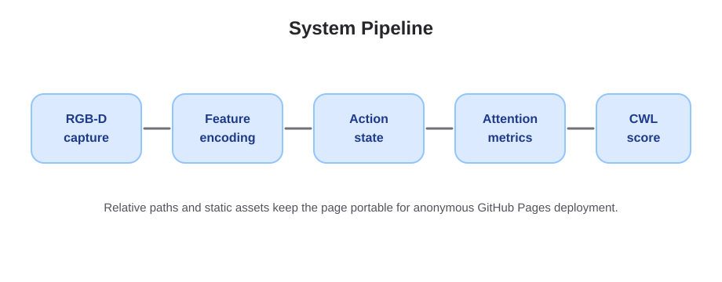
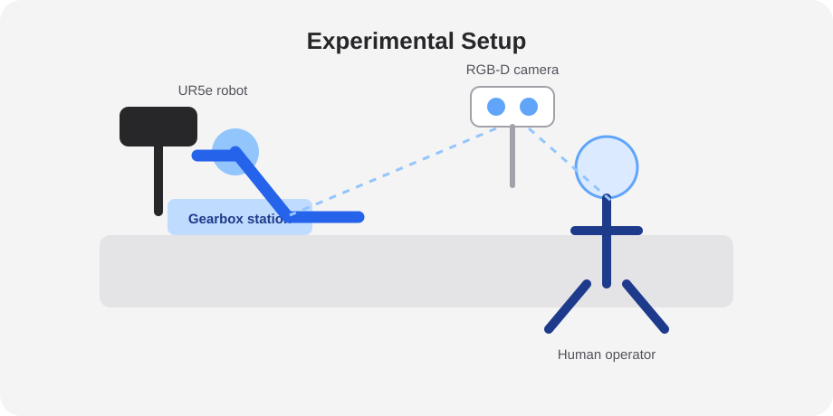
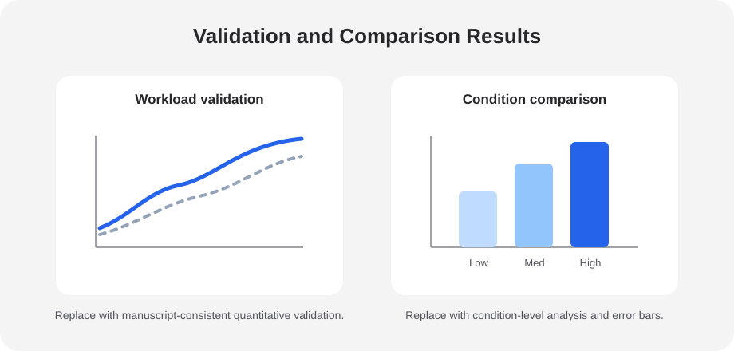

Overview
Human-robot collaborative assembly requires a robot to respond to both task progress and the operator's cognitive state. This project studies a vision-based framework for estimating cognitive workload during collaborative assembly without relying on intrusive physiological sensors.
The framework uses RGB-D observations to model human action, workspace context, and visual attention. These signals are transformed into attention-aware indicators that support workload assessment across assembly stages and interaction conditions.
Framework Overview
The system integrates scene perception, action state estimation, and visual-action attention modeling. The goal is to estimate workload from observable task behavior while preserving a compact and interpretable pipeline for peer review.


Visual-action attention links where the operator looks, which object is currently relevant, and how robot assistance changes task demand. The attention map is treated as a time-varying distribution over action-relevant regions.
This view is intended for supplementary explanation of the model concept rather than as an additional claim beyond the manuscript.
Outputs include normalized workload estimates, stage-level workload summaries, and attention-based diagnostic indicators for different collaborative assembly conditions.
Methodology
Let \(x_t\) denote the visual observation at time \(t\), \(a_t\) the estimated human action state, and \(r_t\) the robot/task context. The workload estimator maps temporal observations to a normalized score:
\[ \hat{w}_t = f_\theta\left(\phi_v(x_t), \phi_a(a_t), \phi_r(r_t), h_{t-1}\right) \]
Attention-based indicators are computed over task-relevant regions \(\mathcal{R}\). A compact metric for visual concentration is:
\[ C_t = \sum_{i \in \mathcal{R}} \alpha_{t,i} \log\left(\alpha_{t,i} + \epsilon\right) \]
The final cognitive workload estimate combines temporal task demand, attention dispersion, action uncertainty, and interaction timing:
\[ W = \lambda_1 D + \lambda_2 U + \lambda_3 A + \lambda_4 T \]
Experimental Setup
The experimental platform is built around a UR5e collaborative robot and RGB-D vision sensing. The assembly scenario is a gearbox assembly task in which the human operator and robot coordinate part selection, handover, placement, and verification.

| Element | Description |
|---|---|
| Robot platform | UR5e collaborative robot for assisted assembly actions. |
| Vision sensing | RGB-D stream for human pose, object state, and scene context. |
| Task | Gearbox assembly with staged human-robot collaboration. |
| Conditions | Different interaction demands and assistance modes. |
Demo
The following demo illustrates a representative human-robot collaborative assembly sequence. The video is served from this anonymous project repository and does not use a third-party video account.
Results
Supplementary result figures summarize workload validation, condition-level comparisons, and quantitative analysis. Values shown here are placeholders for the anonymous project page and should be replaced with manuscript-consistent results before submission.
